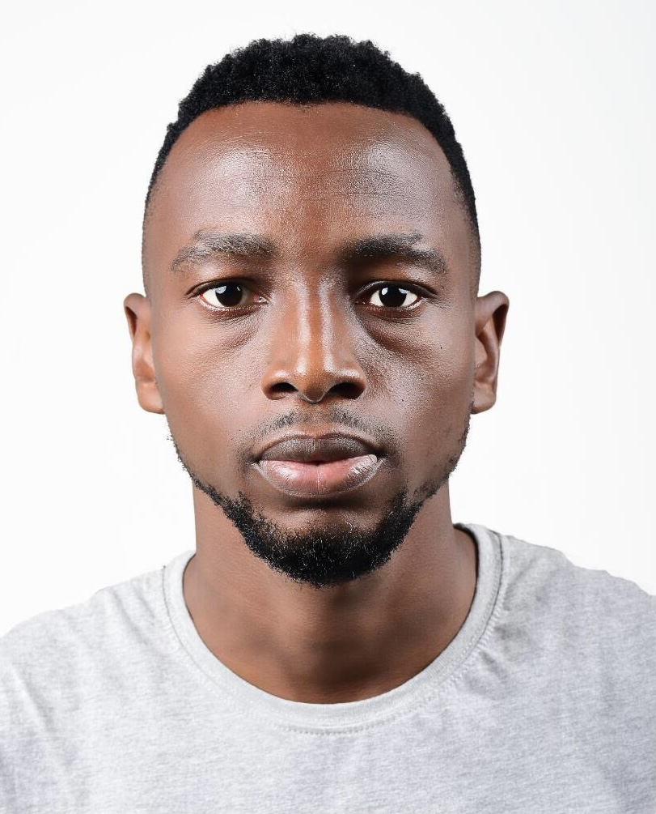

Efe Franklin Okorobie

Summary
A certified Engineer with career experience across fields in the Oil & Gas industry ranging through mechanical engineering,
subsea engineering, ROV operations and working with recommended practices from IOC's like CHEVRON, SNEPco, TOTAL (GSP).
Education
Work Experience
ROV Pilot Technician - Marine Platforms Limited (2017-2022)
- TOTAL AKPO Field - Performed Light Well Intervention (LWI) project.
- TOTAL AKPO & EGINA - Fields Performed Jumper intstallation and Wet storage operations
- CHEVRON Agbami - Worked on Acid injection Project
- SNEPco BONGA - Performed subsea intervention lubrication operation (SILS)
Hydortesting Technician - Festdam Construction Company (2012-2017)
- Connecting estimated spools required for verification
- Pressure and hydrostesting of pipes
- Ensuring the correct specialized tools are used
- Provide feedback and support the to design team
Skills
- ROV Piloting
- Teamwork
- Microsoft ofice and project application
- Communication and interpretational skills
- Computing
- Driving
- Autocad
- Html programming
Professional Certifications
- 2018: BOSIET - Basic Offshore Safety Induction and Emergency Training Certification
- 2018: CA-EBS - Compressed Air Emergency Breathing System Certification
- 2018: Supply Chain and Logistics Management Certification, Tom Associates.
- 2018: Enterpreneurship Training Certification, Lonadek.
- 2019: Trainee Certification of Completion - Marine Platforms on ROV